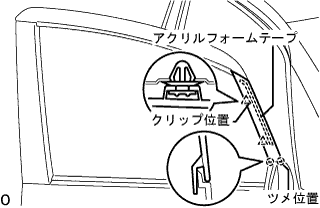

Otariya View Mirror ASSY RH (Side Turn Signal Lamp) Installation |
| 1. Attach the Otarija View Mirror ASSY RH |
Temporarily tighten with three screws so that the screws do not shift and attach the Otari View Mirror ASSY RH.
Tighten the three screws and attach the Otariyabi Umiller ASSY RH.
Connect the connector.
| 2. Front door trim board SUB-ASSY RH installation |
 |
The clip is mixed and the front door trim board RH is assembled on the door panel.
In the screw, attach the front door trim board RH with the front door inside handle RH.
| 3. Front door roux frame bracket garnish RH installation |
 |
Make the lower claws.
The front door roux bracket garnish RH is attached to the upper clip.
| 4. Installation of door pull handle |
Attach the door -pull handle with a screw.
| 5. Front door window frame molding FR RH installation |
Vehicle mounting face cleaning (when using a solvent)
Put the protective tape on the whole acrylic form tape in the body.
Use a polybera or dash to apply the remover bond 7 to the acrylic form tape remaining in the body.
Warm the acrylic form tape remaining in the body with an infrared lamp.
Shave the acrylic form tape remaining in the body using a polybera.
Apply the remover bond 7 to the acrylic form tape remaining in the body.
Warm the acrylic form tape remaining in the body with an infrared lamp.
Rub the acrylic form tape remaining in the body with a rag.
Vehicle mounting face cleaning (when using a tape re -move disk)
Put the protective tape full of the acrylic form tape remaining in the body.
Set 8 disks on the holder and attach the remover disk to the air drill or electric drill.
Put on protective glasses and cut off the acrylic form tape.
Clean the adhesive surface with white gasoline.
Front door window frame molding FR RH installation
|  |
Remove the acrylic form tape separate paper, combine the two claws at the bottom and two clips, and attach a new front door window frame molding FR RH.